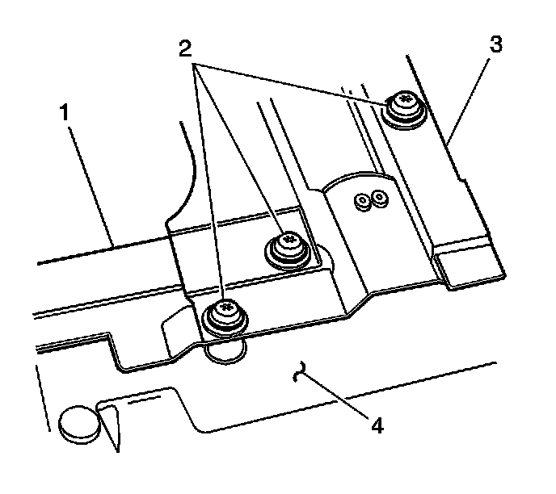
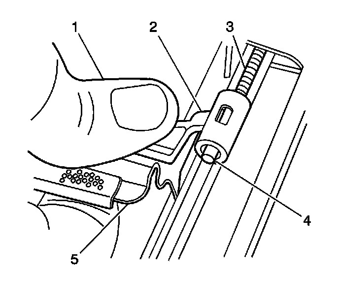

Sunroof Sunshade Assembly Replacement (Front)
Sunroof Sunshade Assembly Replacement (Front)
Removal Procedure

1. Open the front sunshade to the full open/rearward position.
2. It is only necessary to lower the headliner. Only do those step in headliner replacement that will lower the headliner enough to gain access to the part. Refer to Headlining Trim Panel Replacement (Service and Repair) .
3. Remove the front sunroof window. Refer to Sunroof Window Replacement (Front) (Service and Repair)Sunroof Window Replacement (Rear Vent) (Service and Repair)Sunroof Window Replacement (Center) (Service and Repair)Sunroof Window Replacement (Rear Stationary) (Service and Repair) .
Important: Prior to releasing the sunshade track retainers from the sunshade cable barrels, ensure that the sunshade is at the full open position.
4. Remove the sunshade screw (1) from the sunshade link (2) from the cable assembly.

5. Remove the screws (2) securing the sunshade assembly (3) to the lower sunroof frame assembly.

6. With the sunshade assembly screws removed, gently move forward one corner of the assembly (3) in order to release the sunshade from the front track assembly.
7. Remove the sunshade assembly from the vehicle.
Installation Procedure
1. Position the sunroof/sunshade assembly to the front sunroof track assembly.
Important: Install one side of the sunroof/sunshade (3) first, then move the other side rearward in order to locate the sunshade retainer (2, 4) into the front track (1) channel.

2. Prior to installing the sunshade assembly to the bottom of the sunroof frame, pull the sunshade material (1) approximately 75 mm (3 in) outward from the assembly (2). Pull the material outward.
3. Position the sunroof/sunshade assembly to the sunroof frame.
Notice: Refer to Fastener Notice (Fastener Notice) .
4. Install the sunroof/sunshade assembly screws (2).
Tighten the 6 screws to 5 N.m (44 lb in).

5. Pull the sunshade material outward. Install the sunshade link (1) into the sunshade channel (2).

6. Position the sunshade link (2) until the link is aligned over the sunshade cable barrel (4).
7. Use downward thumb pressure (1) to press on the retainer (2) until the retainer locks over the sunshade cable barrel (4).
8. Install the headliner. Refer to Headlining Trim Panel Replacement (Service and Repair) .
9. Install the front sunroof vent window. Refer to Sunroof Window Replacement (Front) (Service and Repair)Sunroof Window Replacement (Rear Vent) (Service and Repair)Sunroof Window Replacement (Center) (Service and Repair)Sunroof Window Replacement (Rear Stationary) (Service and Repair) .
10. Perform the front window/sunshade initialization process. Refer to Sunroof Front Window/Sunshade Initialization Process (Sunroof Front Window/Sunshade Initialization Process) .